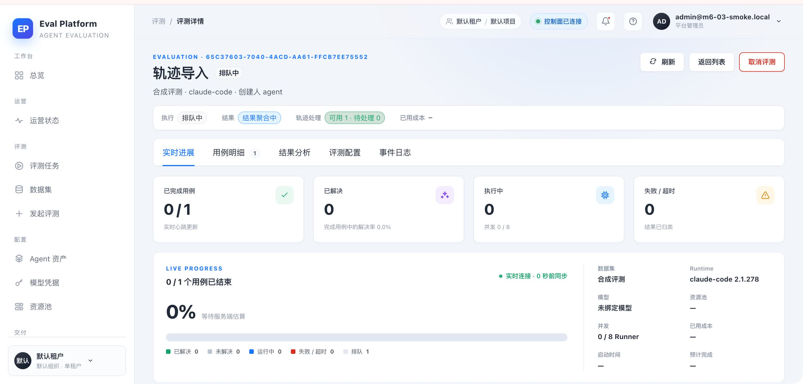
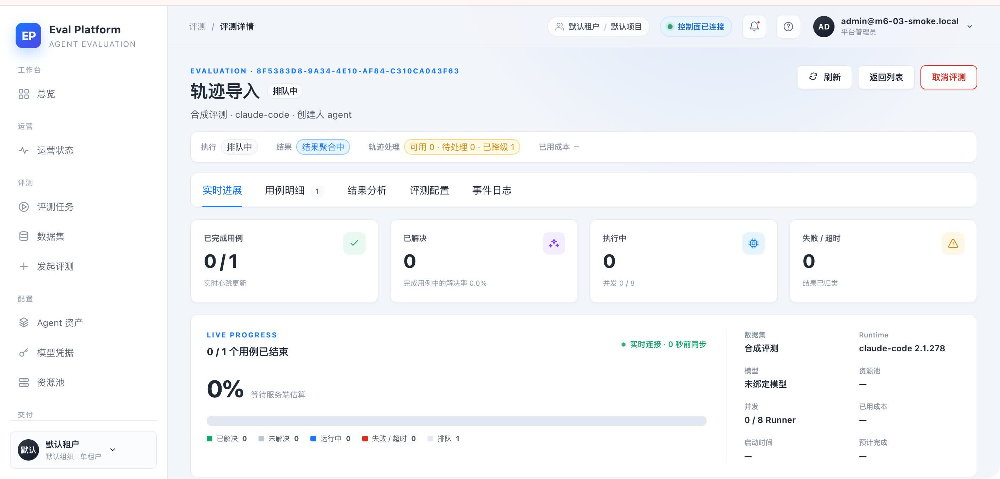
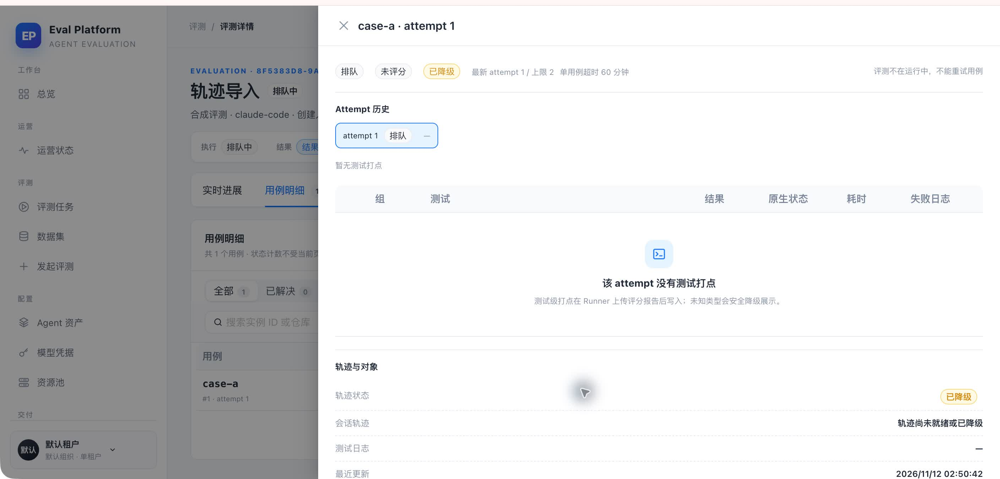
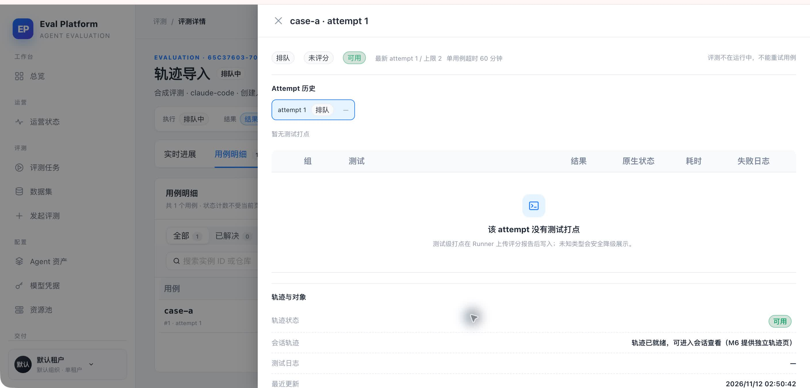

- 分支
- codex/m6-03-claude-code-trace-normalizer
- 提交
- ea1ef52
- PR
- #165 / issue #92
- Parser
- claude-code-2.1.278-v1
- 数据
- 隔离 SQLite + 临时对象存储桩
- 应用
- Eval Platform 本地开发构建
COMPUTER USE · GUI SMOKE
M6-03 Claude Code 轨迹归一化冒烟
真实浏览器验证了 ready、degraded/unlinked、incomplete 三种轨迹处理状态及用例详情。ready 数据由 2.1.278 golden fixtures 实际经过 parser 与 ingestion 写入，数据库断言确认 root 下有 alpha、beta 两个已恢复的子 session。
3GUI 场景
6稳定截图
16Claude pytest
0新增 GUI 缺陷
Environment and Artifact
2026-11-12 · macOS · Chrome · 隔离 SQLite + 本地对象存储桩 + ViteScenario Matrix
3 pass| # | 场景 | 结果 | 断言 | 证据 |
|---|---|---|---|---|
| 01 | 完整多 Agent 轨迹 | PASS | root、两个子 JSONL 与两个 .meta.json 经 parser/ingestion 后为 ready；数据库断言 alpha/beta 均挂到 root，页面显示可用 1。 | 01-ready-trace-status.jpeg 06-ready-case-detail.jpeg |
| 02 | 缺失 root 的降级关系 | PASS | 子文件与元数据存在但缺少 root Agent 调用证据时 session 为 unlinked，页面显示已降级 1；用例明细和抽屉均明确提示轨迹不可用。 | 02-degraded-trace-status.jpeg 03-degraded-case-status.jpeg 04-degraded-case-detail.jpeg |
| 03 | 仅 stdout 的采集不完整 | PASS | partial manifest 只有诊断日志时不伪造轨迹，页面显示采集不完整 1。 | 05-incomplete-trace-status.jpeg |
Issues and Observations
No defects foundNo defects were found.
Evidence
6 screenshots



Automated Coverage Assessment
3 areas reviewed| 区域 | 覆盖 | 结论 | 建议 |
|---|---|---|---|
Conclusion
GUI smoke 通过所有最终场景通过，未发现新的 GUI 缺陷；Claude parser 的关键关系与降级边界有自动化测试和真实入库补证。
- ready fixture 实际生成 root + alpha + beta 三个 session，两个子 session 均有 parent_session_id。
- 缺失 root 证据时显示 degraded，不会把同 sessionId 或 .meta 存在误判为完整关系。
- 三栏查看器尚未交付，因此本 smoke 验证现有可达路径，不伪造 #94 的 session/span 交互。
Computer Use evidence generated from report-data.json; do not hand-edit smoke-report.html.